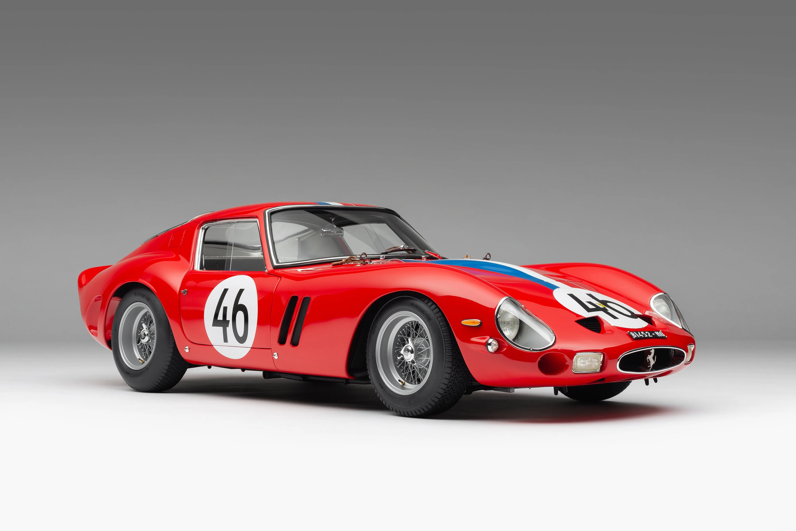

About the Ferrari 250 GTO
The Ferrari 250 GTO, built between 1962 and 1964, is one of the rarest and most valuable cars in the world. Designed for racing, it featured a 3.0L V12 engine and won numerous championships. With only 36 units produced, it remains an automotive legend.
Specifications
- 📅 Year: 1962 - 1964
- 🚗 Engine: 3.0L V12
- ⚡ Horsepower: 300 HP
- 🏎️ Top Speed: 174 mph (280 km/h)